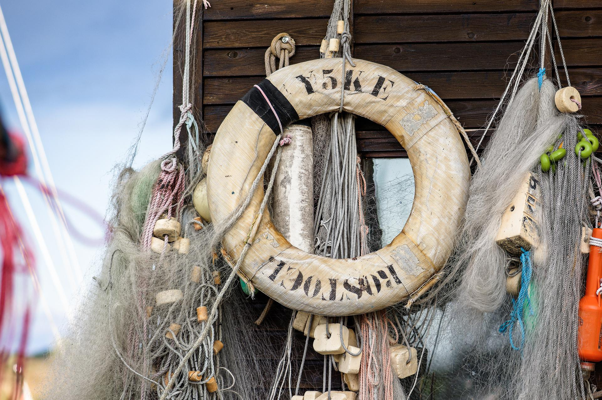
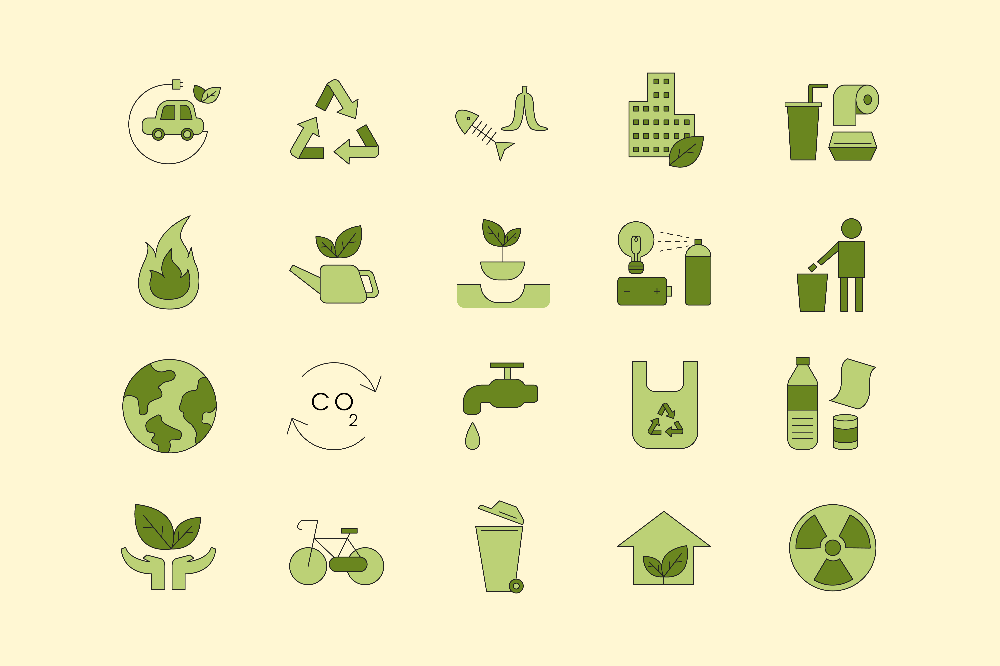
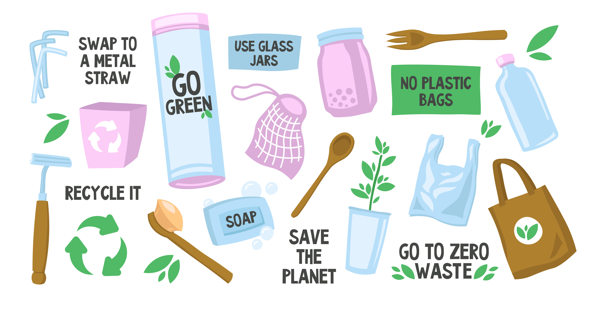

Six Ocean-Friendly Habits to Help Protect Marine Life
Every living thing depends on the ocean. Covering more than 70% of our planet’s surface, it contains an astounding diversity of life and affects everything from global weather patterns to food systems. So when we hear the ocean is in trouble from the effects of overfishing, climate change, and pollution it’s easy to feel powerless. While many of these issues will require leadership from governments and businesses, there are plenty of actions you can take that will make a big difference for the ocean.
1. Overfishing:
The biggest threat to our oceans is overfishing, and irresponsible fishing methods are to blame for the sharp decline in world fish populations. When you go grocery shopping or eat out, choose sustainable seafood to maintain the health of fisheries and fish populations. How can you be confident that your seafood is sustainably sourced? Look for the labels from the Aquaculture Stewardship Council (ASC) and the Marine Stewardship Council (MSC). Your seafood will have their blue and green fish logos, which guarantee that it came from responsibly run fisheries and farms.
2. Reduce your carbon emissions:
90% of the extra heat produced by burning fossil fuels during the previous 50 years has been absorbed by the ocean. Warmer waters as a result have the potential to modify weather patterns on land, change how marine organisms reproduce, bleach coral reefs, and shift where fish swim. Reduce your carbon footprint at home to lessen the impact of climate change on the ocean. Do this by turning off lights and unplugging electronics when not in use, adjusting your thermostat, walking or bicycling to work, and advocating for renewable energy sources in your neighbourhood.
3. Skip the single-use plastics:
Single-use plastics, such as disposable water bottles, takeout containers, plastic bags, and straws, contaminate our oceans, threaten marine life, and can even destroy ecosystems. Within the next ten years alone, there may be one pound of plastic for every three pounds of fish in the ocean due to the 8 million tonnes of plastic that are dumped into the sea every year. Eliminate needless single-use plastics from your everyday routine to lessen your effect. Even doing away with straws might make a significant difference in lowering ocean trash. Every American could prevent almost 1.5 billion straws from ending up in landfills and our oceans if they used just five fewer straws year.
4. Travel smarter:
Consider booking your next trip through a responsible travel company that’s committed to protecting wildlife, empowering local communities, and using guides who are aware of rules and best practices. Once you arrive at your destination, be respectful of marine life and habitats, such as nesting sea turtles on beaches and sensitive coral reef systems. And be discerning about your purchases. Purchasing certain items, such as coral jewelry, shark products, or tortoiseshell accessories (made from endangered hawksbill turtles) damages fragile ecosystems and threatens critically endangered species.